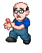

15 |
Fase di costruzione - oggetti |
 |
Spazzatura
Quando un operaio ha terminato di costruire un oggetto, rimane con una Busta della spazzatura in mano.
Per eliminare la Spazzatura devi puntare il telecomando Wii verso l'operaio e tenere premuto il pulsante A per raccogliere la Busta della spazzatura.
Sposta la Busta della spazzatura sul Bidone della spazzatura. Lasciala cadere rilasciando il pulsante A.
Aumento dell'energia degli operai 
Durante le opere di costruzione, se non ricevono assistenza gli operai si stancano e finiscono col prendersi lunghe pause caffè.
Per tenere alto il livello di energia di un operaio devi dargli del caffè.
Punta il telecomando Wii verso la caffettiera e tieni premuto il pulsante A per prendere la caffettiera.
Sposta il caffè sull'operaio e rilascia il pulsante A per versare una tazza di caffè.
Il livello di energia dell'operaio si è rimpinguato. Kit di pronto soccorso Se un operaio subisce un infortunio, deve applicare un bendaggio. 
Per applicare un bendaggio occorre afferrare il Kit di pronto soccorso dalla parte destra dello schermo e trascinarlo sull'operaio.
Per aiutarlo ad applicare il bendaggio più velocemente, punta il telecomando Wii verso l'operaio infortunato, tieni premuto il pulsante B e imita il movimento indicato nella scatola degli attrezzi. |

 |
 |
 |